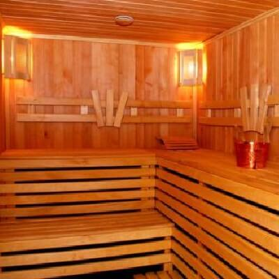
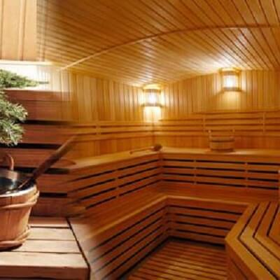
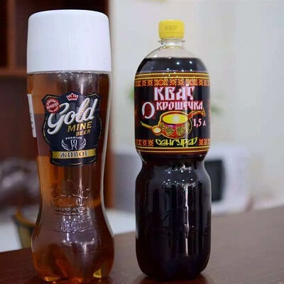
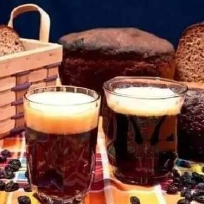
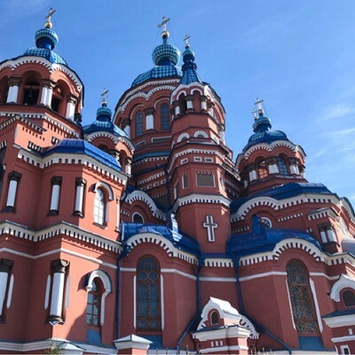
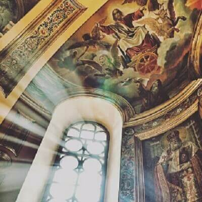
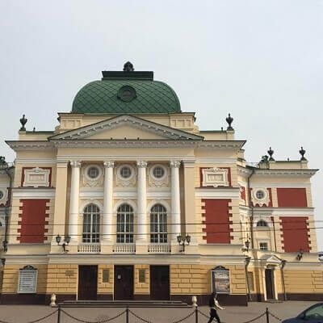
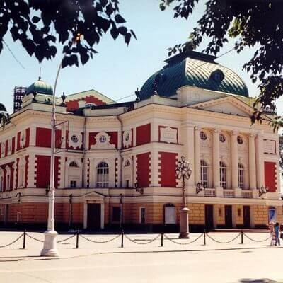

morly旅游网
伊尔库茨克（Иркутск）是俄罗斯伊尔库茨克州的首府，拥有300多年的城市史，是西伯利亚最大的工业城市、交通和商贸枢纽，也是东西伯利亚第二大城市。伊尔库茨克市位于贝加尔湖南端，是离贝加尔湖最近的城市，安加拉河与伊尔库茨克河的交汇处。
到伊尔库兹克值得一体验的是：
俄式桑拿
俄罗斯桑拿与芬兰、土耳其和日本并称世界四大名浴。俄罗斯不分男女老幼、平民贵族，都非常喜欢桑拿。 这不仅是放松舒缓身心的好享受，还是国际间交往的小技巧。 据说叶利钦就曾和德国总理科尔在俄罗斯浴室共议国家大事。两位领导人蒸得其乐融融，还在“幕间”（每次蒸熏四五个回合中间休息时），边喝啤酒边商量双边关系，把谈判桌搬进浴室。 俄罗斯的桑拿洗浴在俄语中叫：“Русская Баня”，或者现在也有的地方就叫“Сауна”。最传统的俄式桑拿是在最传统的俄式木屋或者别墅内，桑拿室内有三层，每一层都可以或坐或躺地蒸桑拿。
 格瓦斯
伊尔库茨克街头巷尾都在卖的格瓦斯。格瓦斯的意思是“以面包发酵”。原料经过发酵得到的风味饮料，微含酒精或者不含酒精。味道酸甜可口，醇香动人。它发酵产生的有益菌，还可以消食健胃，稳定血压和调节血脂。
 奥赫罗普科夫剧场
绿线4号（Green line 4）以奥赫罗普科夫命名的大剧院，是伊尔库茨克历史最悠久的剧院。剧院于1850年修建。1995年被俄罗斯联邦认定为历史文化遗产。
 喀山大教堂
神圣的喀山大教堂坐落在俄罗斯的伊尔库茨克市区。 喀山圣女是俄罗斯人的保护神，喀山圣母像是俄罗斯东正教的最高圣像。它被视为俄罗斯人民的保护神长达数个世纪。在俄罗斯的许多城市都有喀山圣母教堂。
 防寒Tips:
羽绒服/不透风的厚外套，中间层抓绒或者普通毛衣足够，内层强烈建议穿短袖T恤，那边室内超级暖和，穿高领毛衣是要昏过去，当地人在饭店吃饭或者逛商场，都是穿短袖的，外面套一件貂皮大衣！
内容整理至网络，如有侵权，请联系我们！1255394075@qq.com